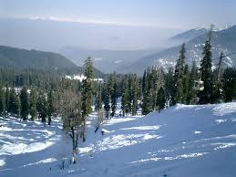
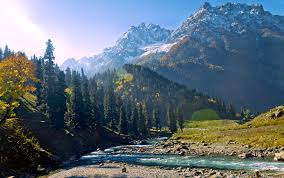
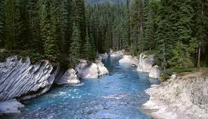

Gulmarg is a town, a hill station, a popular skiing destination and a notified area committee in Baramula district in the Indian state of Jammu and Kashmir. The town is situated in the Pirpanjal range in the western the Himalayas.

Sonamarg is a mesmerizing hill station in the Ganderbal district of J&K. Sonamarg literally means ‘the meadow of gold’ and with snow-capped mountains set against a spectacular blue sky, it is as close to heaven as it can get. The Sindh River flows through the valley.

Pahalgam, known as the ‘Valley of Shepherds’, is a famous hill station in J&K. Standing at the confluence of Lidder river and the Sheshnag lake, Pahalgam is surrounded by thickly wooded pine forests, breathtaking vistas of meadows and the snow-clad Himalayan mountains.